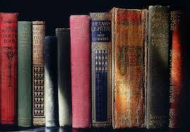
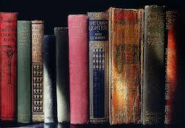

Descripción de la situación de aprendizaje
 

Etapa educativa y nivel al que se dirige: Está dirigida al alumnado de 4º de ESO del IES La Fresneda (Asturias).
Áreas, materias o módulos implicados: Esta situación de aprendizaje se llevará cabo en la materia de Lengua Castellana y Literatura. Además, debido a sus características puede trabajarse interdisciplinarmente con las áreas lingüísticas del centro (inglés o alemán). De forma bastante significativa se puede vincular con la materia de Geografía e Historia de 4ºESO, donde se trabaja el mismo periodo histórico de manera paralela. Finalmente, se puede vincular con las asignaturas de Tecnologías y Digitalización debido al manejo de herramientas TIC.
Vinculación con los proyectos del centro: Durante este curso académico 2024-2025, el proyecto de centro es Europea, de manera que esta situación contribuye de forma significativa a comprender e interiorizar los fundamentos, bases y legado cultural de la Unión. Igualmente, se vincula de forma directa con el PLEI del centro y entronca con Comunicarte, el Proyecto de Innovación que desarrollamos este curso, encaminado a potenciar las alfabetizaciones múltiples y la competencia comunicativa de nuestro alumnado.
Agrupamientos y espacios: Esta tarea se realizará en el aula de referencia. Se aprovechará el aprendizaje colaborativo y se dispondrá de 6 grupos de a 3 o 4 alumnos cada uno. También se desarrollarán actividades en gran grupo.
Temporalización: Esta situación de aprendizaje se desarrollará a finales de la primera evaluación, ya que es en este momento cuando ya se han visto las características generales de la Ilustración, el Romanticismo y el Realismo aplicados a la literatura española y se pueden relacionar y extrapolar a otras literaturas europeas.
Producto final: Mural colaborativo que represente las características, autores y obras principales de la literatura en los países de la Unión Europea durante los siglos XVIII y XIX (exceptuando la literatura española), basado en una investigación en Internet.
Objetivos:
- Investigar los movimientos literarios europeos de los siglos XVIII y XIX en países de la Unión Europea, exceptuando España.
- Identificar las características literarias, autores y obras representativas de cada país o región.
- Utilizar Internet de forma crítica para la búsqueda de información fiable y relevante.
- Fomentar la colaboración y el trabajo en equipo mediante estrategias de aprendizaje cooperativo.
- Diseñar y elaborar un mural que sintetice y visualice la información investigada.
Recursos necesarios: Dispositivos del alumnado (nuestro centro sigue el método BYOD), ordenador de la clase, pizarra digital, impresora. Como material fungible se puede señalar papel continuo, pegamento, tijeras, pinturas...
Herramientas tecnológicas: Teams y otras aplicaciones de Microsoft 365, Canva, Genially...